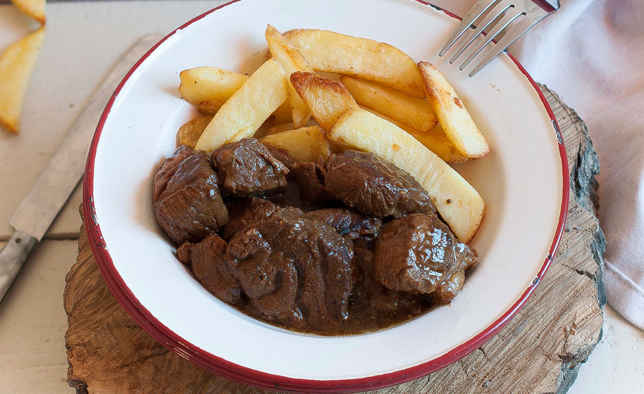

Carbonnade Flamande

Description
Carbonnade Flamande is a traditional Belgian sweet-sour beef stew, similar to the French Beef Bourguignon but cooked with beer instead of red wine.
It is seasoned with thyme, bay leaves and mustard and it is usually served with fries or bread and accompanied by a beer.
Ingredients
- 2 pounds chuck roast, trimmed and cut into stew cubes
- 4 slices of bacon, diced
- 2 11.2oz bottles of Flemish Sour Ale
- 3 medium onions, sliced
- 3 cloves of garlic
- 2 tablespoons olive oil
- 3 tablespoons all-purpose flour
- 1 1/2 cups beef broth
- 2 bay leaves
- 4 springs of fresh thyme
- 1 tablespoon dark brown sugar
- 1 tablespoon whole grain mustard
- 1 Cup chopped parsley plus more to garnish
- Salt and pepper to taste
Instructions
- Marinate the beef with the beer, the garlic, the bay leaves and a pinch of salt for at least two hours, or overnight.
- Drain the beef and reserve the marinade. Pat dry the beef with paper towels.
- In a dutch oven, heat the olive oil until pipping hot. Fry the beef in batches, until golden brown on all sides, about 10 minutes. Remove the beef cubes and reserve.
- In the same dutch oven, fry the bacon until golden and crisp. Reserve with the beef.
- Add the onions, a pinch of salt and fry in the bacon grease, until caramelized (around 10 minutes).
- Add the flour and cook for about 2 minutes until the flour is cooked and the onions are coated.
- Add the beef broth and scrape the bits stuck in the bottom. Add the reserved marinade, the beef, the bacon and the thyme.
- Cook for 1.5 hours.
- Add the brown sugar, the parsley, some fresh pepper and the mustard. Cook for 30 minutes.
- Sprinkle some fresh parsley on top and serve with fries.